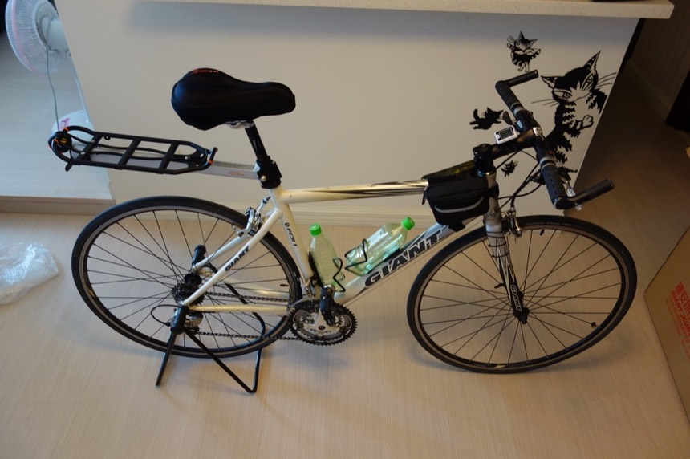

時間真快，從11日請假，一轉眼10天就這麼過去了，期間做了準備工作，直到出發的前一天還在買防水的鞋子。
本來預計要穿的Adidas慢跑鞋，仔細一看原來是網狀的超級透氣鞋子，完全不防水。
一旦遇到下雨或是低溫，腳一定會又濕又凍的很慘。
感謝三峽也開了一間城市綠洲（第十五號店，員工都很親切喲！），這次的旅行的人身用品幾乎都是在城市綠洲買的。
單車的用品則是網路購物、拍賣等，慢慢補其需求。
本來打算用背後網狀背包的方式旅行，但考慮到負重和舒適性，還是去買了一個後貨架。
可以將背包後背/綁在貨架上兩者並行，多一個選項也多一點安心。

2005年單車環法的主角，FCR1，是不是很久沒有見到他了？這幾年都默默地在地下室的腳踏車停車區跟大家擺在一起生灰塵…
這次在永寧站捷安特（感謝！）拿到的紙箱超大的！所以後輪可以不用拆，甚至連踏板都可以不用拆（其實是我拆不下來=..=）
將把手卸下之後，就可以裝進箱子內了。
紙箱的空間之大（135X80X20）我還可以把車前包，坐下包，空水壺等有的沒的通通放在裡面。
就這樣了，希望海南航空的地勤手腳輕一點，拜託拜託～～m(_ _)m
騎車的行程表其實安排的還蠻詳細地，但有人來信說這樣會有人在路上堵我。（做啥呢？）
所以就先把行程表從網上給卸下了。
小旅行而已，乃去便回。